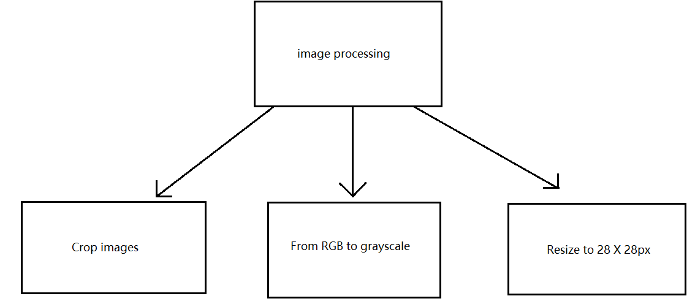

Нейронная сеть для распознавания рукописных цифр
<--- Сделали --->
Сахаров Данила: @SugatoKavary(telegramm)
Попова Александра: @zvukii_paniki(telegramm)
Марьяна Молчанова-Великая: @kotoylitka(telegramm)
Neuro bot - это нейронная сеть для расспознавания цивр, написанных на обычном белом листке бумаги и чтобы разобраться во всей архитектуре давайте начнем с самой базы
Обработка изображения

Обработка изображения разделиласть на 3 подкатегории :